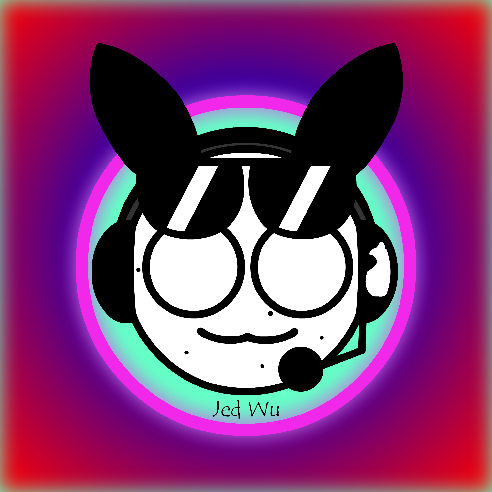

My name is Jed, and I have a great passion for art and media. I love to delve into the world of multimedia and makerspaces. Some of the different projects I have worked on include: 3D modelling, music, digital art, computer programming and more. I especially love music the most, as it is the first art form I really got into through learning guitar. Since then my interests have branched out and I taught myself a bunch of new skills, like learning how to use Blender to make 3D scenes and animations. Here on my website you can see some of the projects I have worked on and learn a little bit about who I am and my interests. To the top left of the screen is a dropdown menu which you can use to navigate my site and learn more about what I do. Below the navigation are my other social platforms.
In addition to my interests in creating stuff, I also love going on hikes in nature. For most of my life I have been lucky enough to live near the massive forest of the Canadian Rockies, so I've used that opportunity to go out into nature and explore. I have climbed many of the local mountains as well as gone on enjoyable trips in the vast Kananaskis Country. Since I loved hiking so much I went to Peru where I hiked the Salkantay and Inca trails over seven days which lead to the world famous Machu Picchu. I also love biking, since I grew up in mountains biking has always been something enjoyable for me. Riding over bumpy trails and roots through fresh mud is a fresh experience like no other. Another activity I love is downhill skiing. Even though it can be ridiculously cold, downhill skiing is totally worth it. It's such a fun time flying down the snowy mountain as you hit jumps and weave through moguls along the way. One more activity I want to mention here is crossfit. Every friday I take the time to head down to the gym and do some intense crossfit workouts. The feeling of finishing a workout is rewarding (usually) and it's good for my health too.
I have lived in Canada for most of my life, but I wasn't always here. I was originally born in Shanghai China to my Taiwanese and German parents. Embarrassingly I'm not particularly great at speaking chinese or german, but I'm working on it! Oftentimes I will visit my family members across the globe and sometimes even travel to a new place I haven't been to before, like France back in 2023 or Peru in 2022. Speaking of travel and moving around, soon I will be studying at the University of Alberta in Edmonton, Canada where I will study computer science. I believe computer science has immense potential since computers essentially run our modern world and there have been huge advancements in fields like artificial intelligence.
Throughout this page you may notice a white slug with headphones and shades. That slug is a character I originally drew on my computer using Microsoft Paint 3D on May 3, 2020. It's based on the real life jorunna parva, also known as a sea bunny which is a kind of nudibranch that lives in the pacific near Asia. I really liked how the slug looked so I just stick with it as sort of my online persona I guess you could call it. Think of the slug as my soft, squishy mascot to represent me on the internet.
Here's a few more random facts about me: I absolutely adore any kind of chocolate, I enjoy drinking sparkling water, my favourite instrument is of course the guitar since I play it, I like the colour aquamarine, rain makes me feel relaxed, I have a fascination with 80s aesthetics and you may not call me Jeb. Now feel free to explore my website, made over the course of many hours beginning in my highschool makerspace class. And of course, have a good day.
NAVIGATION
Home 3D Stuff Animation Art Computer Programming Music Photography ProjectsSOCIALS
Youtube SoundCloud Tumblr